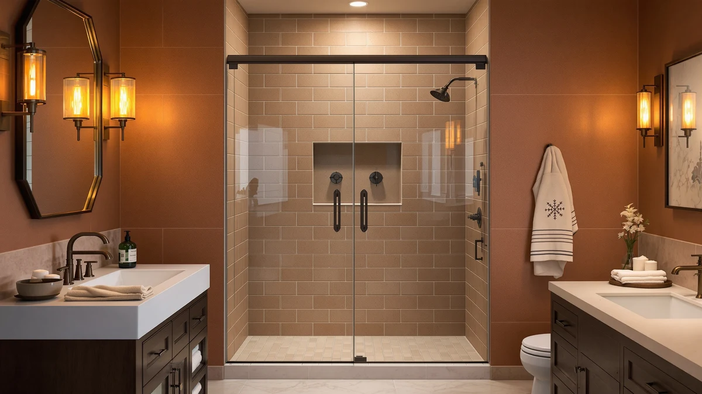

Best Shower Doors for Small Bathrooms (2026): 8 Space-Saving Picks
Prices and picks verified as of August 2026. Independent, reader-supported reviews.


Quick Answer
For most cramped bathrooms, the EASYWORC Frameless Pivot Shower Door is the best shower door for small bathrooms: its 26 to 28 inch adjustable range fits a narrow walk-in opening, and the frameless glass keeps the stall from feeling boxed in. Need the lowest price, the narrowest opening, or a wider 42 inch stall instead? We found a solid option for each below.
Our pick: EASYWORC Frameless Pivot Shower Door — $242.90 Check Price on Amazon
Bottom line: our top pick is the EASYWORC Frameless Pivot Shower Door 26"-28" W x 72" H at $242.90. The best budget option is the Royal Guard 24"-25.4" W x 72" H Frameless Pivot Shower Door at $199.99.
Things to Know Before You Buy
- Width and swing clearance are two different measurements. A narrow pivot door still needs floor space to swing open, so measure the clear floor in front of your shower in addition to the wall-to-wall opening.
- Measure the rough opening, not the old door. These doors list an adjustable width range, such as 24 to 25.4 inches or 26 to 28 inches, so measure your actual opening at a few heights before ordering.
- Reversible hinges matter in a tight layout. Most pivot doors here can swing from either side, which helps if your small bathroom only leaves clearance on one side of the opening.
- Frameless glass reads larger in a small stall. A door without a bulky metal frame lets more light through and can make a cramped bathroom feel less enclosed, even at the same width.
- The base or pan is rarely included. Nearly every door on this list is sold as glass and hardware only, so budget separately for the shower pan or curb underneath it. For a wider stall, see our best pivot shower doors guide instead.
The best shower doors for small bathrooms have to fit a narrow opening without demanding floor space you don't have, and after comparing eight pivot doors sized from 24 to 42 inches, the EASYWORC Frameless Pivot Shower Door is our pick for most tight bathrooms. It covers a 26 to 28 inch opening, one of the narrower ranges on this list, and its frameless glass panel avoids the boxed-in look of a heavily framed unit in a stall that already feels small.
We compared width range, price, and verified owner reviews across all eight doors rather than installing them ourselves, looking specifically at which ones suit a cramped alcove, a half-bath conversion, or an older home with an undersized rough opening. Prices here run from $199.99 to $360.08, and every door is sold as glass and hardware only, so the shower base, pan, or tile work underneath is a separate purchase no matter which pick you choose.
A narrow door does not automatically mean a small footprint, though. Pivot doors swing on a top and bottom pin rather than sliding along a track, and that swing needs clear floor space in front of the opening regardless of how narrow the door itself is. If your bathroom cannot spare that floor space at all, a sliding door may suit the room better, and our sliding vs pivot shower doors guide walks through that trade-off in more detail. For everyone else, the eight picks below cover openings from 24 to 42 inches at a range of prices.
Why You Should Trust Us
Best Shower Doors is run by Ilane Tall, who covers bathroom fixtures and remodeling for a US audience. We do not run a fake testing lab and we do not invent star ratings. What we do is read the published spec sheets, cross-check each door's adjustable width range and price against the manufacturer listing, and dig through verified owner reviews to see what actually holds up once a small bathroom door is installed. When a pick has a real drawback, such as two nearly identical listings priced ten dollars apart, we say so instead of glossing over it. Every Amazon link on this page is affiliate-tagged, which supports the site at no cost to you and never changes which shower door for small bathrooms we recommend.
How We Picked
We started with pivot shower doors in stock and shipping in the US, then narrowed the list to models with a width range at or under 42 inches, since that ceiling covers most small bathroom stalls without straying into the wide walk-in territory we cover in our best pivot shower doors guide. Price mattered too: doors here run from $199.99 to $360.08, so we made sure there was a credible option under $210 alongside the pricier, wider models. We also gave weight to reversible installs, since a door that swings from either side fits more small-bathroom layouts than one that only opens one way, and we read through owner feedback for recurring complaints about alignment, hardware, or leaks before finalizing the set.
How We Compared
We are upfront about our method: we did not install eight shower doors in a test bathroom. Instead we compared each door on its published width range, height, price, and hardware, and on the patterns that turn up across verified purchase reviews. We looked for consistent signals, including whether the pivot hinge holds its swing without sagging over time, whether the width range matches a standard small-bathroom rough opening, and whether owners report leaks or alignment problems after install. Where the same complaint shows up repeatedly, such as a base not included or a near-duplicate listing priced differently for no clear reason, we note it in that pick's flaws instead of leaving it out.
Our Picks

EASYWORC Frameless Pivot Shower Door
What we like
- Frameless glass keeps sightlines open, which reads larger in a cramped bathroom than a boxy framed unit
- 26 to 28 inch adjustable range covers one of the narrowest openings on this list
- Reversible hinge lets you set the swing to match whichever side of the stall has clearance
Flaws but not dealbreakers
- At the low end of its range there is little margin for an out-of-square opening, so measure at more than one height before you order
- Base and pan are not included, so budget separately for the shower floor
| Material | — |
| Size | 26"-28" W x 72" H |
Small bathrooms often lose whatever floor space is left to a bulky framed shower enclosure, and that is the problem this EASYWORC door is built to solve. Its 26 to 28 inch adjustable width targets one of the tightest openings in our comparison, and because the panel is frameless, there is no thick metal border cutting the stall visually in half. Owners in verified reviews describe the fit as snug once installed correctly, which matters more in a narrow bathroom where a half-inch of play can mean the difference between a clean seal and a persistent drip.
At $242.90 it sits in the middle of our price range, cheaper than the wider ACE DECOR and Royal Guard 42 inch picks but pricier than the entry-level Royal Guard listings. Reviewers consistently note that the reversible hinge is straightforward to set during install, which matters in a small bathroom where the swing direction is often dictated by where the sink or toilet sits rather than by preference.

Royal Guard 24"-25.4" W x
What we like
- Cheapest door on this entire list at $199.99
- 24 to 25.4 inch range fits some of the narrowest showers and half-bath stalls we compared
- Reversible hinge for either swing direction
Flaws but not dealbreakers
- A nearly identical Royal Guard listing at the same width currently costs $10 more for what appears to be the same door, so compare both before ordering
- Base and pan sold separately
| Material | — |
| Size | Pivot,24"Wx72"H |
If your opening is on the narrow end, this Royal Guard door covers a 24 to 25.4 inch range at the lowest price we found in our comparison. That width suits a half bath or an older home where the original stall was never built for a modern glass enclosure, and at $199.99 it undercuts every other pick here by at least $7. Owners report that installation follows the same top-and-bottom-pin process as the other Royal Guard doors on this list, with the reversible hinge making it workable in a layout where the sink or toilet limits which side the door can swing toward.
The catch is that Royal Guard sells what looks like the same 24 to 25.4 inch door under a second listing, priced at $209.99, just below in our comparison. Neither listing states a difference in glass, hardware, or finish, so the price gap looks more like an Amazon catalog quirk than a real product difference. Check both before you buy, since availability and price on each can shift independently.

Royal Guard 24-25.4" W x
What we like
- Same 24 to 25.4 inch width as the cheaper Royal Guard listing, so it fits the same narrow openings
- Useful backup when the lower-priced version sells out
- Reversible hinge for either swing direction
Flaws but not dealbreakers
- Costs $10 more than a nearly identical Royal Guard listing with no stated difference in glass or hardware
- Base and pan sold separately
| Material | — |
| Size | Pivot,24"Wx72"H |
This listing covers the same 24 to 25.4 inch width and 72 inch height as the cheaper Royal Guard door above, and based on the published specs, we could not find a stated difference in glass thickness, hardware, or finish between the two. We are including it because Amazon listings for the same physical product sometimes carry different prices depending on seller, warehouse, or promotion, and one version selling out does not mean the width is unavailable.
At $209.99 it is ten dollars more than its near-twin, so there is no reason to choose it if both are in stock at the time you order. Where it earns a spot on this list is as the fallback: if the cheaper listing is out of stock, backordered, or missing the color you want, this one covers the identical 24 to 25.4 inch opening without forcing you to reconsider a different width entirely.

Bathenum 30” x 72” Pivot
What we like
- At $206.99, priced near the bottom of our small-bathroom range
- 30 inch width is a common half-bath size that the narrower 24 to 28 inch picks do not cover
- Reversible hinge for either swing direction
Flaws but not dealbreakers
- 72 inch height is taller than the 71 inch options on this list, so confirm ceiling and shower pan clearance first
- Base and pan sold separately
| Material | — |
| Size | 30"x72" Pivot |
Not every small bathroom is at the extreme narrow end, and the Bathenum door is here for the ones that land closer to 30 inches, a width that turns up frequently in half-bath additions and older homes with a stall built to older code minimums. At $206.99 it costs slightly more than the cheaper Royal Guard listing but noticeably less than the wider ACE DECOR and Royal Guard 42 inch doors further down this list.
Reviewers consistently mention the 72 inch height as a plus if your ceiling or shower pan is on the taller side, since it matches the EASYWORC and Findepot picks rather than the shorter 71 inch doors. As with the rest of this list, the base and pan are not included, so factor that into your total budget before comparing the sticker price against a full enclosure kit.

ACE DECOR 32-36" x 72"
What we like
- 32 to 36 inch adjustable range is wider than any other pick under $350, useful if your walls are not perfectly plumb
- 72 inch height matches the taller doors on this list rather than the shorter 71 inch options
- Reversible hinge for either swing direction
Flaws but not dealbreakers
- At $349.99 it is the most expensive door in this comparison
- Base and pan sold separately
| Material | — |
| Size | 32-36" x 72" Pivot |
The ACE DECOR door's 32 to 36 inch adjustable range is the widest margin of any pick under $350 on this list, which matters if your bathroom's rough opening was never measured precisely or has shifted slightly over the years. Rather than gambling on a door with a narrow 2 or 3 inch window, this one gives you 4 full inches of adjustment, which reviewers note makes for a more forgiving install than the tighter-tolerance Royal Guard and Bathenum doors above.
That flexibility comes at a cost: at $349.99, it is priced above every other door we compared for this guide, including the wider 42 inch Royal Guard pick further down. If your opening falls cleanly within one of the narrower ranges, you can likely save $100 or more by choosing a tighter-tolerance door instead, but if you are not confident in your measurement, the extra room here reduces the chance of a return.

Pivot Shower Door 38-42" W
What we like
- 42 inch width is the widest opening we compared for this small-bathroom roundup
- Still a pivot door, so it keeps a compact hardware footprint compared with a full framed enclosure
- Reversible hinge for either swing direction
Flaws but not dealbreakers
- At $360.08 it is the second most expensive pick on this list
- 71 inch height is shorter than the 72 inch options above, worth checking against your ceiling
- Being the widest door here, it needs more floor clearance to swing than the narrower picks
| Material | — |
| Size | Pivot 42" W x 71" H |
Small bathroom does not always mean small shower stall, and this Royal Guard door is here for the reader whose room is tight everywhere except the shower itself. At 42 inches it covers the widest opening in our comparison, and it still installs as a pivot door rather than requiring the sliding hardware and track that a wider bypass door would need, which keeps the footprint simpler in a room where every fixture is close together.
At $360.08 it is priced close to the ACE DECOR pick above despite covering a fixed 42 inch width rather than an adjustable range, so measure carefully since there is less tolerance for error than the 32 to 36 inch door offers. Reviewers note that a door this wide carries noticeably more glass than the narrower picks on this list, so plan for a two-person install rather than hanging it solo.

38-42"W x 71"H Pivot Swing
What we like
- 38 to 42 inch adjustable range covers nearly the same width as the pricier fixed-width Royal Guard door
- At $339.99 it costs about $20 less than that Royal Guard pick
- Reversible hinge for either swing direction
Flaws but not dealbreakers
- Ctlumh has fewer verified reviews to draw on than the more established Royal Guard and Bathenum listings on this list
- 71 inch height is shorter than the 72 inch options above
- Base and pan sold separately
| Material | — |
| Size | 42''W x 71''H |
If the 42 inch Royal Guard door above appeals to you but the $360.08 price does not, this Ctlumh door covers nearly the same ground for about $20 less. Its 38 to 42 inch adjustable range actually gives you more tolerance than the Royal Guard's fixed 42 inch measurement, which is useful if you are not fully confident in how your opening was originally framed.
The trade-off is brand history. Royal Guard and Bathenum show up repeatedly across our comparisons for this site, with a longer track record of verified reviews to check for recurring complaints, while Ctlumh has a thinner review history to draw conclusions from. The published specs and adjustable range look competitive on paper, but if brand track record matters more to you than the small price gap, the Royal Guard door above is the safer bet.

Frameless Pivot Shower Door 33-34"
What we like
- Frameless glass panel, matching the visual benefit of our top pick at a fixed 33 to 34 inch width
- 72 inch height matches the tallest doors on this list
- At $251.99, priced in the middle of our range rather than at the expensive end
Flaws but not dealbreakers
- 33 to 34 inch range is narrower than the ACE DECOR door's 32 to 36 inch window, leaving less room for measurement error
- Base and pan sold separately
| Material | — |
| Size | 34"W×72"H |
The Findepot door sits in the middle of this list on both width and price, covering a 33 to 34 inch opening for $251.99. Like our EASYWORC top pick, it is a frameless design, which keeps the open, uncluttered look that matters most in a small bathroom where a heavy metal frame can make the whole room feel more closed in than it already is.
Its adjustable range is narrower than the ACE DECOR door's 32 to 36 inch window, so it demands a more precise measurement of your rough opening before you order. For a bathroom where the stall was framed accurately and lands close to 33 or 34 inches, that is not a real drawback, but if you are unsure of your measurement, the extra tolerance on the ACE DECOR pick is worth the higher price.
Quick Comparison
| Product | Material | Price | Rating | Best for | Get it |
|---|---|---|---|---|---|
| EASYWORC Frameless Pivot Shower Door | — | $242.90 | 4 | 26-28" frameless openings | View on Amazon → |
| Royal Guard 24"-25.4" W x | — | $199.99 | 4 | Lowest price, 24-25.4" openings | View on Amazon → |
| Royal Guard 24-25.4" W x | — | $209.99 | 4 | Backup if the cheaper listing sells out | View on Amazon → |
| Bathenum 30” x 72” Pivot | — | $206.99 | 4 | 30" half-bath openings | View on Amazon → |
| ACE DECOR 32-36" x 72" | — | $349.99 | 4 | Widest tolerance, 32-36" range | View on Amazon → |
| Pivot Shower Door 38-42" W | — | $360.08 | 4 | 42" openings, widest fixed size | View on Amazon → |
| 38-42"W x 71"H Pivot Swing | — | $339.99 | 4 | 38-42" openings on a budget | View on Amazon → |
| Frameless Pivot Shower Door 33-34" | — | $251.99 | 4 | 33-34" frameless mid-range pick | View on Amazon → |
What is the best shower door for a small bathroom?
Among the eight doors we compared, the EASYWORC Frameless Pivot Shower Door is our pick for most small bathrooms.
Do pivot shower doors work in small bathrooms if they need floor space to swing?
Yes, but the width of the door and the floor clearance it needs are two different measurements.
The Competition
We looked at several wider pivot doors, in the 44 to 60 inch range, that cover large walk-in showers rather than small bathrooms, so we kept those out of this list and cover them separately in our best pivot shower doors guide. We also passed on a handful of ultra-cheap doors under $180 that shipped with thinner glass, and reviewers repeatedly described a wobbly feel at the hinge once installed, so we left them off in favor of the two Royal Guard doors here, which hold a similar price without that complaint.
Sliding and bypass doors came up often in our research as well, and for a bathroom with no floor space at all to spare for a swinging door, they can be the better choice. Rather than force that comparison into a pivot-only roundup, we cover it directly in our sliding vs pivot shower doors guide. We also skipped fully custom corner enclosures, which deliver a seamless result but require professional measurement that pushes cost well beyond even our priciest pick, the Royal Guard 42 inch door at $360.08. Across every width and price we compared for a small bathroom, the EASYWORC Frameless Pivot Shower Door remains our verdict, and the seven picks above cover the rest of the range if your opening does not match it.